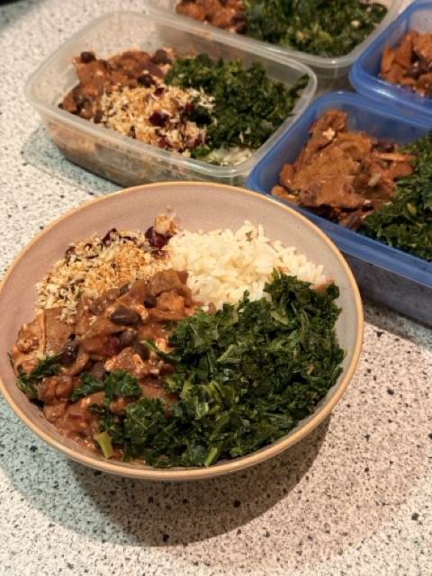

ingredientes
- 480 g de carne vegetal em pedaços
- 16 g de bacon vegetal
- 25 g de linguiça vegetal em rodelas
- 200 g de queijo cottage
- 1 lata (400 g) de feijão preto cozido e escorrido
- 140 g de arroz branco cru
- 20 g de farinha panko
- 300 g de couve
- 1 cebola roxa picada
- 1 tomate grande picado
- 2 dentes de alho
- 500 ml de caldo de legumes
- Temperos: cominho, páprica defumada e pimenta do reino
preparo
- Cozinhe o arroz em água com sal.
- Em uma panela, doure o bacon, a linguiça e a carne vegetal. Reserve.
- Na mesma panela, refogue o alho picado e metade da cebola.
- Acrescente o tomate, a páprica defumada, o cominho e a pimenta do reino.
- Adicione a mistura de carne vegetal, o feijão preto e 300 ml do caldo de legumes. Deixe cozinhar até engrossar.
- Desligue o fogo e adicione o queijo cottage.
- Em uma frigideira, doure a outra metade da cebola. Adicione a farinha panko e mexa até dourar.
- Refogue a couve com alho e um pouco de água. Se quiser, finalize com limão.
observações
Essa receita foi planejada para servir 5 porções, com os seguintes macros aproximados por porção: 408 kcal; proteína: 33 g; carboidratos: 45 g; gorduras: 9 g.
sobre os ingredientes
Queijo cottage
A única função do cottage nesta receita é aumentar o teor de proteína.
Carne, bacon e linguiça vegetais
Para essa receita, utilizamos 150 g de AH Terra Seitan Kebab, 320 g de AH Terra Plantaardige runderreepjes, 16 g de AH Terra plantaardige bacon e 25 g de AH Terra plantaardige kipbraadworst.
Couve
Como é difícil encontrar couve manteiga nos Países Baixos, utilizamos boerenkool.